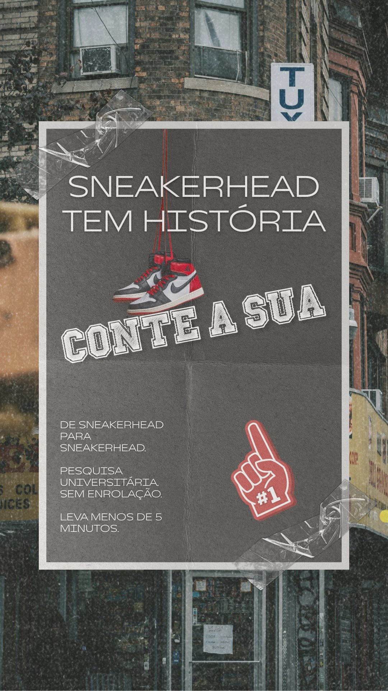

Direção de arte e copy para Stories de divulgação de pesquisa universitária sobre cultura sneaker.

Formato
Instagram Stories
Contexto
Pesquisa Universitária
Ferramentas
Canva
Áreas
Design + Copy
Objetivo
Engajamento
Público
Sneakerheads
01 — contexto
Uma pesquisa universitária sobre cultura sneaker precisava de divulgação no Instagram Stories. O desafio não era só criar algo bonito — era criar algo que não parecesse pedido acadêmico.
Materiais de divulgação de pesquisa costumam errar na mesma direção: linguagem institucional, estética genérica e CTA que soa como favor. O resultado é invisível para o público que importa.
O objetivo era o oposto: fazer o próprio sneakerhead querer responder, porque o material falava a língua dele.
02 — decisões criativas
Cada elemento visual tem justificativa conceitual — nada é decorativo.
Background — Brooklyn urbano
A cultura sneaker nasceu nas ruas americanas e se consolidou no Brooklyn. O background não é só estético — é um argumento visual sobre a origem geográfica da cultura. Quem é da cena reconhece.
Elemento central — Air Jordan 1 pendurado
O AJ1 é o marco histórico da tensão entre cultura de rua e mercado: a Nike pagou a multa da NBA para Jordan continuar usando o tênis proibido em 1985. Não é só um tênis icônico — é o símbolo exato do que a pesquisa estuda. Escolha conceitual, não decorativa.
Tipografia — fonte universitária
A fonte em estilo universitário americano remete às quadras de basquete colegial, onde a cultura sneaker começou. Conecta o elemento acadêmico (pesquisa universitária) à origem cultural (basquete nas quadras) sem precisar dizer explicitamente.
Estética — poster/zine com textura
A textura de papel amassado e as fitas adesivas criam a sensação de um cartaz colado na rua — referência direta à cultura de rua e ao streetwear. Afasta o material do universo acadêmico formal e o aproxima da linguagem visual do público-alvo.
Elemento de apoio — foam finger #1
Clássico das arquibancadas americanas, preenche o espaço em branco do canto direito sem competir com o tênis central. Reforça o universo cultural e mantém a coerência da estética sem adicionar ruído.
03 — copy
O copy foi estruturado em três camadas com funções distintas:
A decisão de usar coluna única no bloco inferior — em vez de dois blocos simétricos — veio da análise de referências reais do universo sneaker (Nike Checkerboard, Knu Stack). Nenhuma delas usa grade simétrica no rodapé. O texto funciona como ficha técnica editorial, não como layout de apresentação.
04 — aprendizados